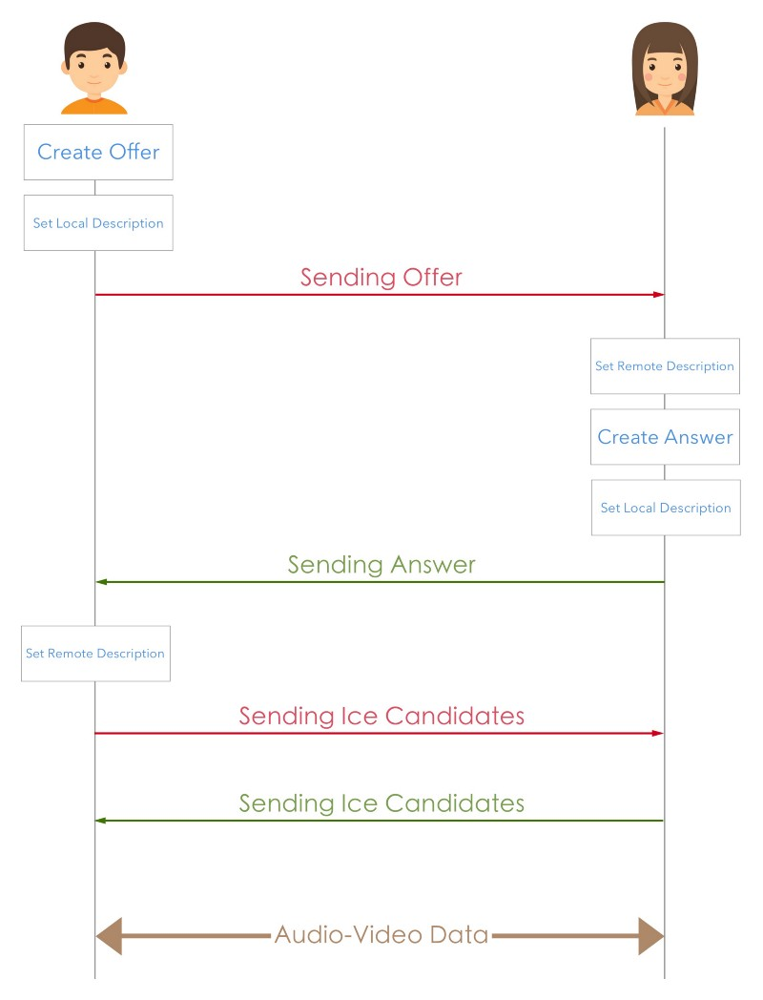

- Web Real-Time Communications
- 별도의 소프트웨어없이 음성, 영상, 텍스트, 파일 등의 데이터를 브라우저끼리 주고 받을 수 있게 만든 기술
- P2P 통신에 최적화
- MediaStream: 카메라, 마이크 등의 데이터 스트림에 접근
- RTCPeerConnection: 암호화, 대역폭 관리, 오디오/비디오 연결 담당
- RTCDataChannel: 음성, 영상 데이터가 아닌, json/text 데이터를 주고받음
수행 과정

- Fetching: peer에게 보낼 나의 음성, 영상 데이터를 수집
- Signaling: peer와 연결하기 위해 peer의 정보를 탐색
- Connection: 발견된 peer와 P2P connection 진행. 채널을 개방해둠
- Communication: 개방해놓은 채널을 통해 데이터를 주고받음
Signaling
- Peer들이 데이터를 교환할 수 있게 처리해주는 과정
- peer들이 통신하기 위해서는 서버가 필요하고, 서버를 통해 서로의 SessionDescription을 교환해야함
- ICE Framework를 사용해 내 ip, port를 찾아서 서로의(peer) network 정보를 교환
- SDP 형식을 따르는 offer, answer를 주고받으며 Media Capability(각자 사용 가능한 코덱, 해상도 등이 무엇인지) 교환
- Session Control Messages(통신 연결의 초기화, 종료)를 교환
STUN/TURN Server
- P2P 통신이 가능하도록 해줌
- peer들이 연결하려면 서로의 ip를 알아야하는데, 실제로는 방화벽 등으로 peer들간의 연결이 쉽지 않음 이때 STUN, TURN 서버를 사용한다.
STUN
- Session Traversal Utilities for NAT
- NAT 환경에서 내 ip 주소를 알려줌
- 클라이언트 A는 STUN 서버를 통해 내 ip 주소가 뭔지 받고, 접근 가능한지 알아냄
NAT
- Network Address Translation
- 단말에 공개 ip 주소를 할당하기 위해 사용됨
- 모든 단말들은 라우터에 연결되어있고, 라우터는 공개, 비공개 ip 주소를 가지고 있음
- peer간의 요청은 단말의 private ip로부터 라우터의 공개 ip 주소, 유일한 포트 기반으로 가능해짐
TURN
- Traversal Using Relays around NAT
- 어떤 라우터들은 네트워크에 연결할 수 있는 제한이 있어서, STUN으로 공개 ip 주소를 알아내도 모두가 연결할 수 있는 것은 아님 -> TURN 서버가 필요
- 몇몇 라우터는 Symmetric NAT(이전에 연결한 적이 있는 연결들만 허용함)을 채용하고 있음 -> TURN 서버와 연결하고 모든 정보를 그 서버에 전달하는 것으로 Symmetric NAT 제한을 우회하는 방식으로 진행
- TURN 서버와 연결한 후 모든 peer들에게 모든 패킷을 보내고 다시 본인에게 전달해달라고 해야하므로 오버헤드가 발생
SDP
- Session Description Protocol
- 스트리밍 미디어 포맷
- 해상도, 형식, 코덱, 암호화 등의 멀티미디어 컨텐츠의 연결을 설명하기 위한 표준 프로토콜
- peer간의 ice candidate 교환 후 createOffer()로 offer SDP를 생성(내가 사용 가능한 코덱, 해상도 등의 정보가 담김) 및 전송
- offer sdp를 받은 peer는 setRemoteDescription()을 수행
- 받은 peer는 createAnswer()로 answer SDP를 생성하고 전달
- 쌍방으로 모두 진행되야 함
- 둘 다 setRemoteDescription()이 수행되면 P2P 연결 성공
ICE Candidate
- Interactive Connectivity Establishment
- 브라우저가 peer를 통한 연결이 가능하도록 하게 해주는 프레임워크
- 내 네트워크 정보
- onIceCandidate()로 내 ice candidate를 확보해서 전달
- peer의 candidate가 도착하면, addIceCandidate()로 peer의 네트워크 정보를 등록해야함
참고
- [WebRTC] WebRTC란? https://medium.com/@hyun.sang/webrtc-webrtc%EB%9E%80-43df68cbe511
- 2018 webRTC 정리 http://jaynewho.com/post/36